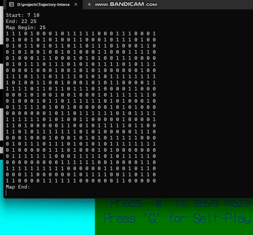
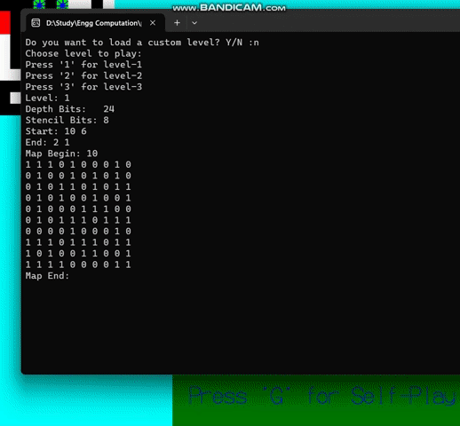

Project Overview:
This project comprised of three key components:
-
Maze Environment Development:
I constructed a versatile maze simulator that can serve as a general purpose testing ground for search-based planning algorithms. The design aimed to challenge
the algorithms with complex navigation tasks, pushing the boundaries of their pathfinding capabilities. This general-purpose environment was crafted using C++ and the OpenGL library, ensuring high performance. -
Trajectory Interception Algorithm:
This module was aimed at developing an algorithm capable of tracking and intercepting a rogue agent. This component was a testament to my innovative approach to
dynamic pathfinding. By adapting the classic A* algorithm, I created a modified variant tailored for predictive and responsive interception, enabling the simulated agent to effectively pursue and capture moving targets within the maze.The Demo below shows the agent in blue intercepting the rogue agent in red
 -
Multi-Agent Planning Implementation:
At the core of the simulation was my implementation and integration of a multi-agent planning algorithm known as Conflict-Based Search (CBS). This advanced
algorithm facilitated the coordination of multiple agents,
allowing them to operate within the maze environment simultaneously without conflict, demonstrating potential for complex, collaborative navigational strategies.The demo below shows three different agents with different start and goal locations planning collision free paths for each agent

The synergy between the intricately designed maze simulator and the robust algorithm resulted in a powerful tool for exploring and demonstrating the effectiveness
of search-based planning strategies in real-time scenarios.